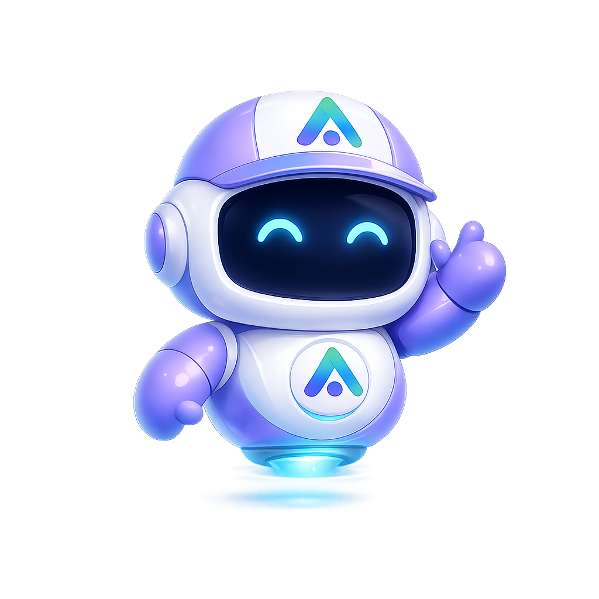

業務を分解する
人が暗黙知で処理している判断、確認、報告、連携を工程ごとに分解し、AIエージェントが担える単位へ整理します。
Agentic Automation Design & Build
私たちは単なるAI開発会社ではありません。業務プロセスを分解し、AIエージェントを中心としたオペレーションへ再設計することで、属人性を減らし、安定した判断と実行を可能にします。
AIエージェント
調査・分析・報告
業務運用
業務分解・再設計
事業ポートフォリオ
事業運営・投資

AIを「便利なツール」として追加するのではなく、業務の流れ、判断基準、情報の渡し方そのものを設計し直します。
人が暗黙知で処理している判断、確認、報告、連携を工程ごとに分解し、AIエージェントが担える単位へ整理します。
調査、分析、要約、監視、レポート作成など、目的ごとに役割を持ったAIエージェントを配置します。
一度きりの自動化ではなく、継続的に回るオペレーションとして設計し、品質を保ちながら改善します。
事業運営では、優秀な個人の判断や経験に依存する場面が多くあります。alvavinciはその構造を前提に、情報収集、論点整理、比較、報告、実行支援をAIエージェントに分担させます。
目指しているのは、人を置き換えることではありません。人が本来向き合うべき意思決定に集中できるよう、前後の業務を安定して支える実行基盤をつくることです。
AIエージェントを中核に据えながら、投資、事業開発、メディア運営、不動産など複数の領域で長期的な価値形成に取り組んでいます。
Sora Intelligenceを中心に、調査・分析・報告を担うAIチームを運用し、意思決定の前段を整えます。
詳しく見る事業の強みや継続性を尊重しながら、AI活用と運用改善を通じて長期的な成長を支えます。
詳しく見るSIGNAL、SKINLAB、emomonを通じて、継続的な情報発信とブランド構築に取り組みます。
詳しく見る長期保有と安定収益を重視し、分散された資産基盤の構築を進めます。
詳しく見る暗号資産・米国株式などを対象に、長期的な視点で資本配分を行います。
グループ会社の事業活動を支え、AIエージェントを活用した運用体制を整えます。
alvavinci LLCを中心に、各事業会社・ブランド・AIチームが連携し、事業運営と意思決定を支える体制を構築しています。
AIエージェント業務設計 / 投資 / グループ運営